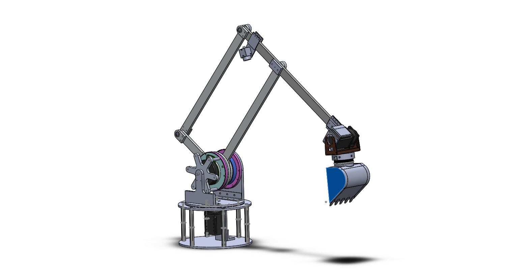

The operation of mining excavators is a demanding and often undesirable job that requires operators with a high skill level. Obtaining this level of skill entails years of training, and practice on lower capacity equipment. This has led to a situation where supply of skilled operators cannot match market demand. The overarching objective of this project is to develop the methods and techniques required to automate excavation in mining applications.
MIT D'Arbeloff Lab: Autonomous Excavator

Mechanical Design
- Mechanical design of robust swivel mechanism to add another degree of freedom to the arm
- Integration of various sensors including bucket force sensing and visual sensing
- Development of initial control strategies
Applying ML to Identify Key Features in Autonomous Excavation
- Applied gaze tracking to track where operators focus their attention
- Employed a Convolutional Neural Network to extract key features that are of high interest to human operators
- Method can be applied in the future to identify only the necessary inputs in the control decision proces, shortening computation time